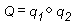

Throughout Direct3D, vertices describe position and orientation. Each vertex in a primitive is described by a vector that gives its position, color, texture coordinates, and a normal vector that gives its orientation.
Quaternions add a fourth element to the [x, y, z] values that define a three-component-vector. Quaternions are an alternative to the matrix methods that are typically used for 3D rotations. A quaternion represents an axis in 3D space and a rotation around that axis. For example, a quaternion might represent a (1,1,2) axis and a rotation of 1 radian. Quaternions carry valuable information, but their true power comes from the two operations that you can perform on them: composition and interpolation.
Performing composition on quaternions is similar to combining them. The composition of two quaternions is notated like the following illustration.

The composition of two quaternions applied to a geometry means "rotate the geometry around axisâ‚‚ by rotationâ‚‚, then rotate it around axisâ‚ by rotationâ‚." In this case, Q represents a rotation around a single axis that is the result of applying qâ‚‚, then qâ‚ to the geometry.
Using quaternion interpolation, an application can calculate a smooth and reasonable path from one axis and orientation to another. Therefore, interpolation between qâ‚ and qâ‚‚ provides a simple way to animate from one orientation to another.
When you use composition and interpolation together, they provide you with a simple way to manipulate a geometry in a manner that appears complex. For example, imagine that you have a geometry that you want to rotate to a given orientation. You know that you want to rotate it râ‚‚ degrees around axisâ‚‚, then rotate it râ‚ degrees around axisâ‚, but you don't know the final quaternion. By using composition, you could combine the two rotations on the geometry to get a single quaternion that is the result. Then, you could interpolate from the original to the composed quaternion to achieve a smooth transition from one to the other.
The D3DX utility library includes functions that help you work with quaternions. For example, the D3DXQuaternionRotationAxis function adds a rotation value to a vector that defines an axis of rotation, and returns the result in a quaternion defined by a D3DXQUATERNION structure. Additionally, the D3DXQuaternionMultiply function composes quaternions and the D3DXQuaternionSlerp performs spherical linear interpolation between two quaternions.
Direct3D applications can use the following functions to simplify the task of working with quaternions.
Direct3D applications can use the following functions to simplify the task of working with three-component-vectors.
Many additional functions that simplify tasks using two- and four-component-vectors are included among the Math Functions supplied by the D3DX utility library.
Coordinate Systems and Geometry
Â
Â